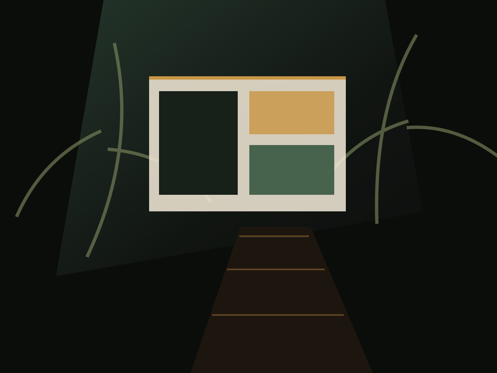
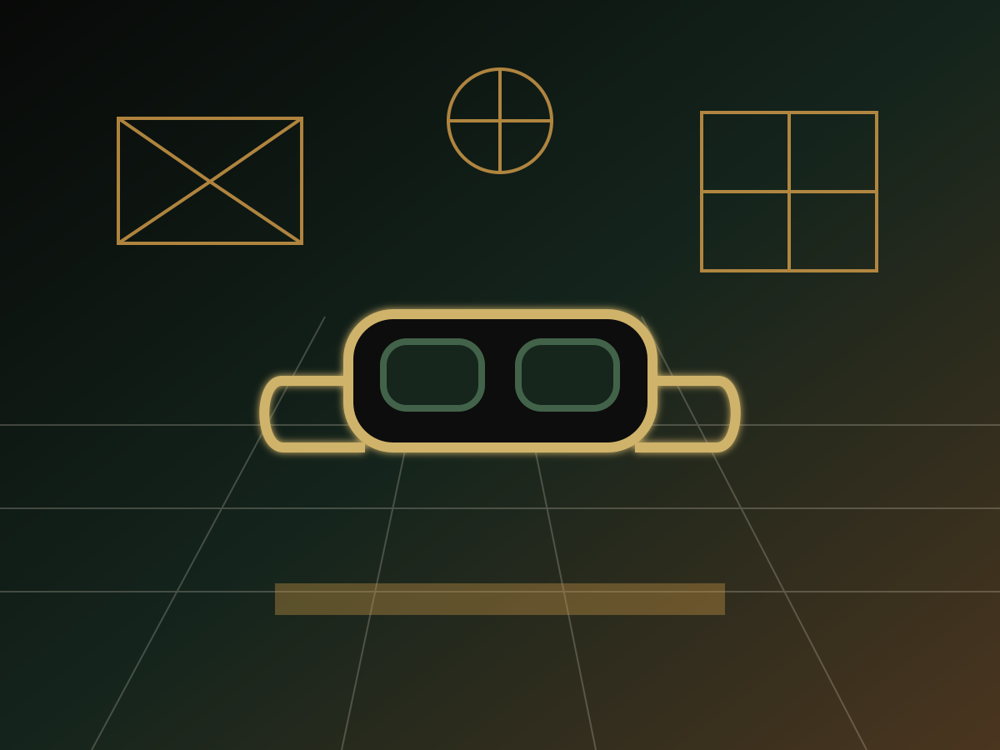

Problem statement
Make technical content feel immediate.
The challenge was to transform complex scientific ideas into a public-facing experience that could engage first-time visitors, school groups, and repeat audiences.

Science city exhibits
Interactive exhibits exploring the wonders of science.
Project overview
Chromosome Designs developed a layered exhibit system combining spatial storytelling, large-scale models, digital kiosks, and guided discovery moments.
Problem statement
The challenge was to transform complex scientific ideas into a public-facing experience that could engage first-time visitors, school groups, and repeat audiences.
Design response
We organized the exhibit around orientation, spectacle, tactile learning, digital interaction, and reflective exit points so the content could be explored at different depths.
Sketches and concepts
Early studies define the interpretive hierarchy, visitor sightlines, material tone, and the relationship between built objects and digital layers.
Materials used
Outcomes and impact
The completed environment gave the institution a visitor-ready experience with durable exhibits, flexible content areas, and memorable public moments.
Interactive gallery


Related projects